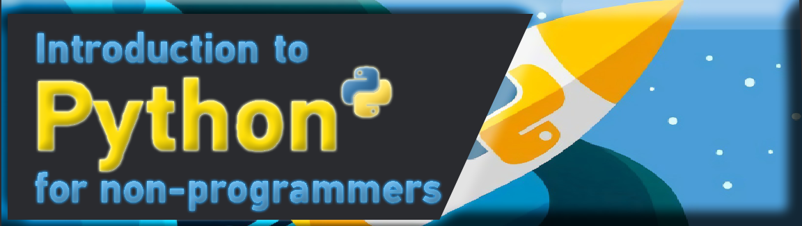

LECTURE - 00 INTRODUCTION
การเขียนโปรแกรมคอมพิวเตอร์ถือได้ว่าเป็นทักษะอย่างหนึ่ง โดยความหมายของคำว่า “ทักษะ” คือสิ่งที่สามารถเรียนรู้ ฝึกฝน และพัฒนาจนเกิดความชำนาญได้โดยไม่จำเป็นต้องมีพรสวรรค์ใดๆ การเขียนโปรแกรมก็เช่นเดียวกันครับ ต้องฝึกฝนการคิดวิเคราะห์ และแก้ไขปัญหาอย่างเป็นขั้นตอน มีความเข้าใจหลักภาษาและไวยากรณ์ของภาษาโปรแกรมเพื่อสั่งงานคอมพิวเตอร์ ใช้งานชุดคำสั่งของภาษาโปรแกรมได้อย่างเหมาะสม และฝึกลงมือปฏิบัติจากการทำโครงการเพื่อแก้ปัญหาจริง ผู้เขียนเชื่อเหลือเกินว่าผู้อ่านจะสามารถเขียนโปรแกรมได้อย่างแน่นอน
Guido van Rossum โปรแกรมเมอร์ชาวเนเธอร์แลนด์ผู้สร้างภาษา Python ประกาศผ่านบัญชีทวิตเตอร์ส่วนตัวของเขาว่าเขาได้ตัดสินใจเข้าร่วมฝ่ายนักพัฒนาของ Microsoft แล้วหลังจากที่เขาได้โพสต์ทวีตนี้ไป ผู้ใช้ทวิตเตอร์หลายรายก็ได้ออกมาแสดงความคิดเห็นให้เขาช่วยผลักดันการนำ Python ไปเป็นภาษาโปรแกรมมิ่งหลักใน Microsoft Excel ซึ่งนับว่าเป็นทิศทางที่น่าสนใจ เนื่องจากในปัจจุบัน Python เป็นภาษาที่ได้รับความนิยมมากที่สุดภาษาหนึ่งในการจัดการกับข้อมูลGuido van Rossum คิดค้น Python ขึ้นในช่วงปลายปี 1989 และมีประสบการณ์การทำงานที่สถาบันวิจัยด้านคอมพิวเตอร์และองค์กรหลายแห่ง ในปี 2005 เขาได้ย้ายมาทำงานที่ Google ก่อนที่จะย้ายไป Dropbox ในปี 2013 และลาออกและเกษียณอย่างเป็นทางการในปี 2019
Python คือหนึ่งในภาษาโปรแกรมระดับสูงที่ใช้กันอย่างแพร่หลาย ถูกออกแบบเพื่อให้มีโครงสร้างและ ไวยากรณ์ของภาษาที่ไม่ซับซ้อน เข้าใจง่าย มีการใช้พัฒนาแอปพลิเคชัน เว็บไซต์ รวมถึงแอปบนมือถือหรือ อุปกรณ์เคลื่อนที่ด้วย หน้าที่ของ Python ก็คือการทำงานแปลชุดคำสั่งทีละบรรทัดเพื่อป้อนเข้าสู่หน่วยประมวลผล ให้คอมพิวเตอร์ทำงานตามที่เราต้องการ หรือเรียกว่าการทำงานแบบ Interpreter นั่นเอง ด้วยภาษาที่ง่ายในการเขียน “Python” จึงมีความเหมาะสมสำหรับผู้ที่เริ่มต้นเขียนโปรแกรมไปจนถึงนักพัฒนาในองค์กรบริษัทใหญ่ อย่างเช่น Netflix, Spotify, Google, Amazon, และ Facebook เป็นต้น